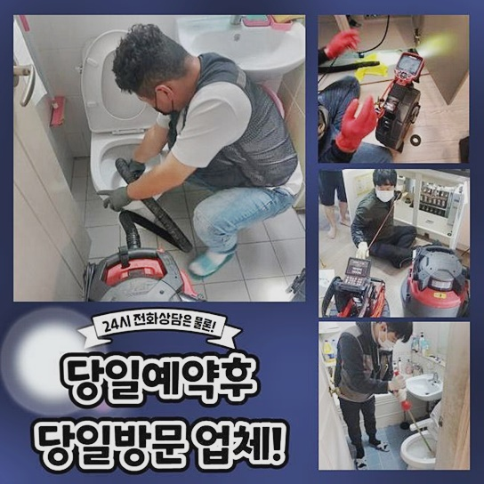
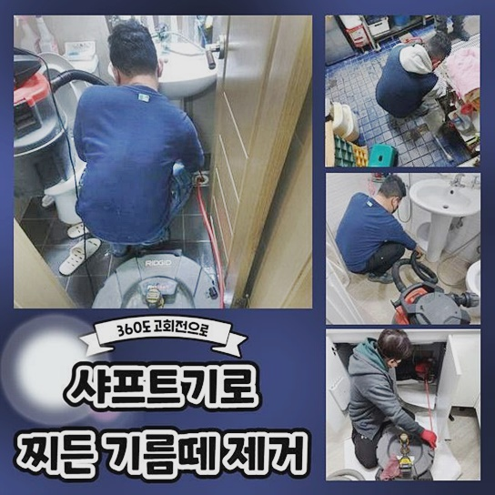
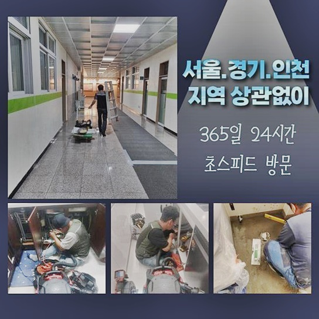
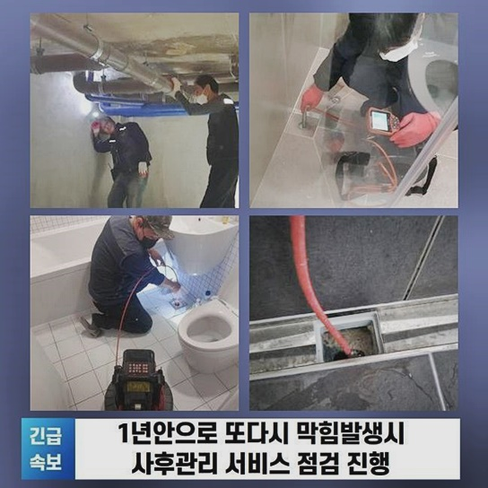
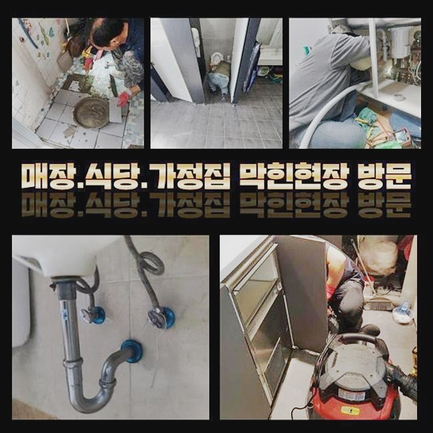
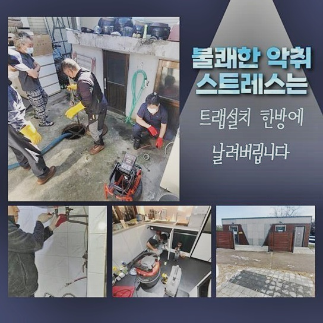

🏠 고양시 효자동씽크대배수관막힘 능곡동 하수구청소 누수탐지공사
고양 싱크대막힘 전문 시공 후기

📋 작업 개요
- 위치: 고양
- 서비스 유형: 싱크대막힘, 하수구막힘, 배관막힘, 집수정막힘, 누수수리, 뚫는업체, 배관청소, 고압세척, 설비공사, 배관보수, 악취차단
- 작업 일시: 2024. 9. 27. 11:23
- 업체명: 하수구수사대 (010-5615-2118)
🔍 문제 상황
고양시 효자동씽크대배수관막힘 능곡동 하수구청소 누수탐지공사
멀쩡하게 기능이 돌아가던 곳이 불현듯 마비된다면 공백으로 인한 어려움들이 일시에 몰려올 수 있습니다
집안에서 생활하수를 쓰는데 제약이 있다면 정상적인 일상은 포기해야 합니다
오늘 함께 공유할 시공을 도와드리러 내방드린 곳도 시설물로 인한 피해가 막심했습니다
집안에 진동을 하는 하수구 냄새 때문이라도 빨리 와달라 하셨는데 물이 시원하게 내려가지 못하는 모습인데다 더불어 생긴 악취는 감당이 안된다고 얼른 와달라는 요청을 주셨네요
하수구의 막힘이나 고장은 얼른 손봐주지 않으면 더욱 커다란 불편함을 낳을 수 있으니 서둘러야해요
이번 현장처럼 점진적으로 통수가 아예 막혀버린 케이스라면 고객님의 불찰로 인해서 막힌 사안이라고 추정하게 됩니다
물기가 윗 부분에 남아있고 흐릿하게 오염됐다면 일단은 싱크대에 찬 물과 오염원을 소거시켜야 관로를 탐색할 수 있습니다
이제껏 물의 사용이 여러 어려움을 겪으셨을 것이며 이 모습을 보면 막막하셨을 것이니 이제는 고장 전처럼 원만하게 설비를 마음껏 쓰실 수 있게 수선해드리려는 사명감을 가졌어요
막힘은 시간 상관없이 생기므로 늦은 밤에 생길 수도 있으니 언제라도 준비자세를 갖춰서 언제라도 듬직하게 지원해드려야 합니다
집에 발을 들여놓자마자 냄새가 끔찍하게 풍겨다는 정도라서 빠른 대처를 하기 위해 시공에 착수했습니다
하수를 배출시켜 보았는데 물의 양을 늘려봐도 전혀 폐수되지 않은데다 범람 현상까지 함께 일어났더라고요
지난 업체들도 야심차게 확인했다가 쉬운 조건은 아니었던 탓에 회피하고 돌아갔어서 실력좋은 곳을 찾아서 저희 팀에 전화를 걸어주셨습니다

🔎 원인 분석
💡 전문가 진단: 정밀 진단 장비를 사용하여 슬러지의 고착 여부를 판명하고 타격/세척 작업을 실시했습니다.
저희의 장비나 실력이 효과를 발휘했기에 복잡하게 얽혔던 문제를 말끔히 치유할 수 있었네요
강압적으로 조치하지도 않고 막힘의 동기도 잘 찾아내고 남김 없이 세척해 드려서 호평을 보내주셨습니다
합리적인 비용과 하자가 있으면 다시 봐주는 것도 감동적인 부분이라고 주변에 추천하신다고 말씀하셨어요
관로에 누적된 이물질을 자세히 진단하여 속도도 빠르고 효율적인 지름길을 강구할 수 있었습니다
갈아주는 샤프트나 석션 청소기를 활용해서 이물질을 없애가면 가장 까다롭던 부분인 막힘은 일단 해소됩니다
습식 청소기를 통해서 세정을 해나가는 이유는 번거롭지만 하자를 방지합니다
파편들이 잔여해 있다면 뭉쳐가면서 덩어리가 될 위기를 맞이할 수 있기 때문이죠!
재발 시 시간과 비용의 손실도 무시 못하지만 의뢰인분의 힘든 심경도 부메랑처럼 돌아오게 되니 한 번의 시도에 끝내야 합니다
하수관 속에 기름질이나 노폐물이 축적되다보면 수돗물이 이동하는 경로가 가로막혀서 제자리걸음하여 물이 고여버리는 겁니다
이와 같은 사태를 겪고싶지 않은 분들이라면 적절한 기간마다 하수구를 정돈하고 관리해야 해요
파이프라인으로 접근하는 카메라로 켜서 결함이 생긴 현상황을 측면들을 알아낼 수 있어요
끈적한 기름때가 끼어있는 현장은 배관의 모범적인 이용 방식을 새기며 시설물을 쓰지 않아서 벌어지는 것입니다
소량은 흘러갈 거라 생각해서 음식쓰레기의 일부를 물에 씻어서 흘려보내면 조금씩 쌓이다 문제가 발현돼요

🔧 작업 과정
하자가 바로 보이진 않아도 오염물질은 깊이 파고든 채 점차 덩어리화가 되며 통로를 완전 메워버립니다
가득 막힌 파이프를 보수하기 위해서는 원을 그리며 도는 샤프트를 쓰면 확실한 개선을 꿈꿀 수 있어요
사슬 형태의 포인트의 힘으로 오랜 세월 쌓여오다가 고체화가 이뤄진 오염물질을 잘게 쪼개줄 수 있기 때문입니다
해당 장비의 말단이 갈고리 형태라서 오염원을 손쉽게 파쇄하여 꺼내줄 수 있습니다
이와 같은 과정으로 남김 없이 처리해서 투명한 물이 순탄하게 배출되게 해줘요
감지하기 힘든 파이프라인의 어디가 차단됐나 상세하게 상황 중개를 해드려서 훨씬 마음이 놓인다 하셨어요
주름관을 뜯어내고 석션기를 써서 내부를 정돈했는데 큰 변화가 달성되진 않더라고요
통로의 찌꺼기를 다 긁어냈더니 곧장 시원한 소리를 내면서 잔수가 집수정으로 이동하더라고요
겉면에 있는 이물질들을 수습해 준다고 한들 완전하게 시원스럽게 물길이 열리진 않으니 전문진의 손길로 세척해야 합니다
불시에 다양한 변수와 잠복된 문제까지 발현되니 모든 과정에서 예민하게 반응해야 합니다
고성능의 배관 전용 장비와 경험을 살려서 문제를 빚은 오염원들을 제거해 나가기 시작했어요
저희가 쓰는 도구들은 석션기와 스케일링기 관통기 등을 이용해서 내부를 청소해 갑니다
오염원이 머무른 지점은 몇 군데만 그렇지만 물이 막힘없이 트이려면 고압세척도 실시해야 합니다
습식 청소기를 싹 돌려서 포진한 이물질을 하나 둘 소강시키고 고압 세척방식으로 깨끗한 관로를 형성하는 겁니다
이번 현장은 내시경으로 배관의 속사정을 보니 각종 잔해들이 많이 적재되어 있던 사태라 방해 인자로 막혀버렸다는 것을 감지할 수 있었어요
표면 쪽만 처리해서는 극복되지 않을 사안이라 보여서 결함이 없도록 조성하는 것이 정답이라고 확신할 수 있었어요!
작업에 들어가기 이전에 내부를 상태를 검토하는 것도 그렇지만 뚫어나가는 과정은 현재 상황에 대한 분석력과 성실한 자세가 필요합니다
여러 곳에서 동시에 막힘이 탄생할 수 있는 문제이니 모두 조치를 하지 못하면 정상적인 폐수 기능이 달성되지 못할 것입니다
수돗물을 못 쓴다는 점은 상업시설이 아니라도 곤경에 빠뜨릴 수 있으니 갑갑할 수 있습니다
온 집에 배여버리는 악취는 거주자와 방문자 모두에게 부정적인 문제이다 보니 빠르게 수선을 봐야합니다


✅ 작업 완료
내부 하수구에서 보통 발견되는 오염원을 보자면 음식 잔여물과 먼지 기름 슬러지가 많은데요
이와 같은 물질은 분해되는 과정에서 썩어가며 어마어마한 악취가 확산되게 하며 균의 번식도 이뤄집니다
하수배관이 오염된다면 고객님과 가족분들의 건강을 저하되게 만들 수 있으니 도외시 해서는 안되는 일입니다
집안의 주요 시설물의 고장을 경험하시게 되었다면 전문가에게 빨리 컨택해서 비정상적인 부분을 판단하고 잘못된 곳을 바로잡는 게 현명한 처사입니다
특히나 노후 배관이 고장났다면 적합한 세기를 잘 알고있는 배관 영역의 고수를 발굴하시는 게 필요합니다
공장형으로 일정한 매커니즘 없이 부실하게 하수구청소를 하는 곳이라면 누수처럼 치명적인 하자가 벌어지기도 하니 현명하게 결정하셨으면 합니다




⚠️ 베란다 누수 및 방수 관리 방법
- ✅ 비가 많이 올 때 창틀 주변이나 아래층 천장에 얼룩이 생기는지 정기적으로 확인해 보세요.
- ✅ 우수관 주변 실리콘 마감이 들뜨거나 깨진 틈새가 있는지 손상 여부를 수시로 체크하세요.
- ✅ 베란다 바닥 타일의 줄눈(메지)이 소실되면 그 틈으로 물이 침투하여 누수가 유발됩니다.
- ✅ 누수 의심 증상 발견 시 방치하면 아래층 손실이 커지므로 즉시 전문가의 진단을 받으십시오.
💡 핵심 정리
- 확실한 장비 작업(내시경 점검 및 샤프트 스케일링)으로 원인을 뿌리 뽑습니다.
- 작업 후 1년 이내에 동일한 부위 재발 시 100% 무상 A/S 서비스를 보장합니다.
- 서울 · 경기 · 인천 전 지역에 24시간 언제든 긴급 출동할 수 있도록 항시 대기 중입니다.
❓ 자주 묻는 질문 (FAQ)
🚨 고양 싱크대막힘 문제로 고민이신가요?
정확한 원인 진단과 확실한 시공으로 재발 없는 해결을 약속드립니다.
24시간 긴급 출동 | 서울 · 경기 · 인천 전지역 | 1년 내 재발 시 무상 A/S